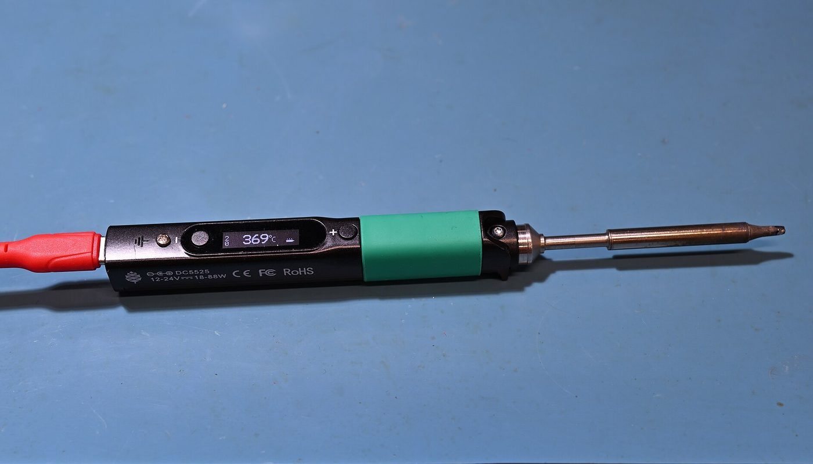
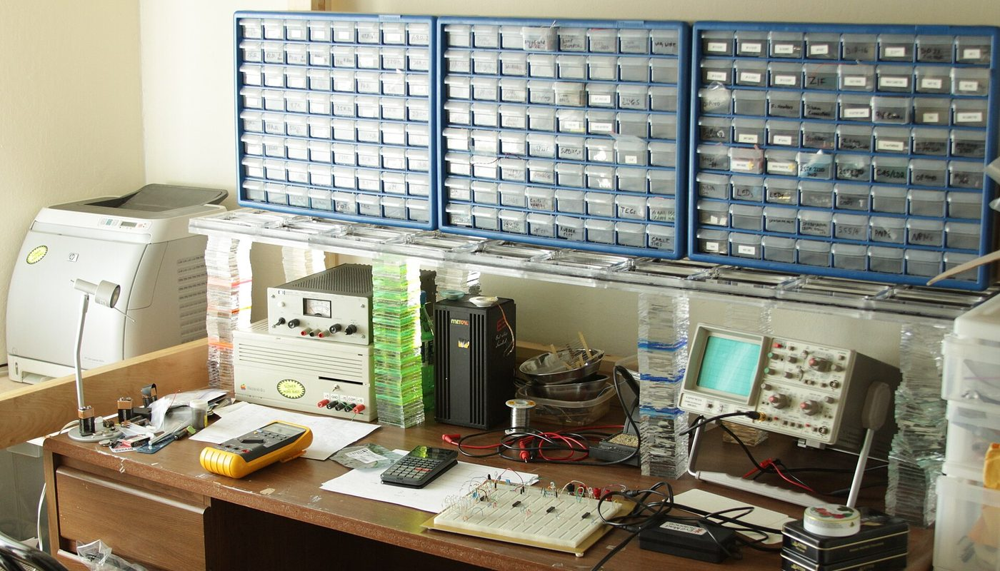

Fer à souder portable · aucun lien affilié sur cette page · prix relevés le 2 oct. 2026
Pinecil V2 : acheter un vrai fer à souder et fuir les copies — 40,24 € en France, 25,99 $ chez le fabricant, face à une station à 121 $

Un fer à souder de poche de 88 watts, alimenté par USB-C ou par une prise 12-24 V, à 40,24 € TTC chez un revendeur européen et 25,99 $ chez le fabricant : c'est le Pinecil V2, matériel ouvert et micrologiciel libre (IronOS). Il suffit pour réparer, bricoler et débuter — sans payer une station de soudage à 121 $. Mais le marché est truffé de copies vendues comme authentiques : la page donne le repère visuel qui les distingue, les prix réellement relevés le 2 octobre 2026, et ce que les tests oublient de dire sur l'alimentation.
Aucun lien affilié sur cette page — voir comment ça marche Prix lus le 2 oct. 2026 IronOS : 8 372 étoiles GitHub, GPL-3.0
En bref
- Le besoin réel : souder, réparer, assembler sans acheter une station fixe — et surtout ne pas payer le prix d'un fer authentique pour recevoir une copie qui porte le même nom. Les place de marché sont saturées de contrefaçons.
- La solution libre : le Pinecil V2 (matériel Pine64, schémas ouverts) tourne sous IronOS, micrologiciel libre GPL-3.0 — dépôt public 8 372 étoiles, 835 forks, dernier développement le 10 septembre 2026.
- Le prix en euros : 40,24 € TTC (33,53 € HT) chez un revendeur de l'Union européenne le 2 oct. 2026, numéro de produit ELE005584 ; livraison France affichée à 6,89 €, offerte dès 250,00 €.
- Le prix chez le fabricant, en dollars : 25,99 $ prix communauté (35,99 $ prix conseillé) sur la boutique Pine64, en stock — mais expédié hors de l'Union, avec la TVA et les frais qui vont avec.
- Le commercial, en dollars : une station fixe de marque, la Hakko FX-888D, était listée à 121,47 $ le même jour. L'écart de prix est réel — mais il achète aussi une masse thermique que le fer de poche n'a pas.
De quoi on parle exactement
Le Pinecil V2 est un fer à souder de poche contrôlé par un processeur. Sa particularité n'est pas le prix : c'est qu'il est ouvert. Les schémas de la carte sont publics et le micrologiciel, IronOS, est un logiciel libre (licence GPL-3.0) développé ouvertement sur GitHub — n'importe qui peut le modifier, ajouter ses propres courbes de température ou corriger un comportement. C'est ce qui le distingue d'un fer générique « intelligent » dont on ne peut ni auditer ni mettre à jour le firmware.
Concrètement, trois choses rendent ce type de fer intéressant pour un débutant comme pour un bricoleur confirmé :
- Il chauffe vite. La fiche du revendeur annonce environ 12 secondes pour atteindre la température de travail (avec une alimentation adaptée), contre une à deux minutes pour un fer passif classique.
- Il utilise des pannes actives standard. Les embouts sont au format TS100, un standard répandu : les pannes se trouvent et se remplacent facilement, y compris hors du circuit du fabricant.
- Il se met en veille tout seul. Un capteur de mouvement baisse la température quand il ne détecte plus de geste et coupe le fer après un temps réglable : moins d'usure des pannes et moins de risque.
Ce que la même page officielle précise aussi, et qui change la décision d'achat : la version V1 a été arrêtée en juillet 2022. Si un vendeur vous propose un « Pinecil V1 neuf » comme une bonne affaire, c'est le signe d'un stock ancien — ou d'une copie. On y revient plus bas.
Les prix : ce qui est lu, où, et quand
Tous les montants ci-dessous ont été relevés le 2 octobre 2026. Les prix en euros viennent de la fiche d'un revendeur basé dans l'Union européenne (Eleshop.fr), affichés toutes taxes comprises. Les prix en dollars viennent des pages publiques de Pine64 et de Hakko, lus le même jour : ils sont donnés en dollars et ne sont pas convertis — les convertir à notre taux serait fabriquer un prix qui n'existe pas.
Les prix en dollars, lus le 2 oct. 2026
Barres proportionnelles aux montants ci-dessus, base à zéro. Les trois montants sont en dollars américains, lus le 2 octobre 2026 sur les pages publiques de Pine64 et de Hakko ; ils ne sont pas convertis en euros.
Les prix en euros TTC, lus le 2 oct. 2026 (revendeur EU)
Barres proportionnelles aux montants affichés, base à zéro. Les deux prix sont affichés toutes taxes comprises sur la fiche du revendeur, lus le 2 octobre 2026. Le fer TS80P est un produit voisin proposé sur la même fiche ; ce n'est pas un Pinecil.
| Article | Prix relevé le 2 oct. 2026 | Où / nature |
|---|---|---|
| Pinecil V2 (fer nu, panne B2 incluse) | 40,24 € TTC (33,53 € HT) | Eleshop.fr (revendeur EU) — fiche ELE005584 |
| Pinecil V2 — prix communauté | 25,99 $ | Pine64 « Pine Store » (hors UE, non converti) |
| Pinecil V2 — prix conseillé | 35,99 $ | Pine64 « Pine Store » (hors UE, non converti) |
| Jeu de 4 pannes fines (format TS100/ST) | 24,99 $ (prix conseillé 34,99 $) | Pine Store, en stock (non converti) |
| Livraison vers la France | 6,89 € — offerte dès 250,00 € | Eleshop.fr |
| Fer TS80P (fer comparable, autre marque) | 69,37 € | Eleshop.fr — produit voisin |
| Station Hakko FX-888D (station fixe) | 121,47 $ | hakkousa.com (hors UE, non converti) |
La lecture honnête tient en deux phrases. D'abord, l'écart de prix entre le fer de poche et la station fixe est réel (25,99 $ à 40,24 € contre 121,47 $), mais ce ne sont pas les mêmes outils : la station a une masse thermique et une stabilité qu'un fer de poche n'a pas. Ensuite, le même fer n'a pas le même prix selon le canal : 25,99 $ chez le fabricant hors UE contre 40,24 € TTC chez un revendeur européen — l'écart, en partie, c'est la TVA, le port et le délai d'expédition, pas seulement la marge.
Vrai ou faux : le repère qui évite la copie
Ce n'est pas un détail de collectionneur : sur les place de marché, des vendeurs proposent des « Pinecil » qui n'en sont pas, au nom et au logo près. Le wiki officiel de Pine64 est catégorique. Voici ce qu'il écrit, mot pour mot.
Les quatre repères d'un vrai
La page officielle liste aussi les revendeurs autorisés (Pine64 EU, et pour le reste : AmeriDroid, Bitcompact, Blinkyparts, Droneit, Eleshop, Handheld Legend, Keycapsss, Testclips, Typeractive). La règle qui en découle est simple : si le vendeur n'y figure pas, ou si la poignée n'est pas noire à grip vert, ce n'est pas le produit. Ce guide existe parce que cette information est en anglais, dans une page technique, et qu'aucune page française ne la résumait.
Ce que ça permet, concrètement

1 · Réparer et assembler au quotidien
Souder un connecteur, remplacer un condensateur, réparer un câble : le fer de poche couvre le gros des gestes d'entretien électronique. Sa chauffe en quelques secondes évite d'attendre, et sa taille le rend utile même là où une station encombrerait.
2 · Un atelier qui tient dans une poche
C'est l'argument central du format : alimentable par une batterie d'outillage ou une batterie LiPo, il suit sur le terrain — intervention, dépannage à domicile, réparation loin d'une prise. Les pannes standard TS100 rendent son entretien simple.
3 · Un outil que l'on peut mettre à jour soi-même
Comme le micrologiciel IronOS est libre et actif (dernier développement en septembre 2026), le fer s'améliore par mise à jour : réglages de veille, réponses thermiques, fonctionnalités. C'est la raison pour laquelle les communautés de makers suivent ce produit plutôt qu'un modèle fermé.
Le flux, en une image
Ce que les tests oublient de dire
- Le câble d'alimentation n'est pas fourni. La fiche du revendeur l'écrit noir sur blanc : il est livré avec le fer et une panne B2, pas avec l'alimentation ni le câble. Prévoyez-les, sinon le fer ne sert à rien.
- La pleine puissance dépend de votre alimentation. Pour atteindre les 88 W et la chauffe rapide annoncée, il faut une source 12-24 V à 3 A minimum, via USB-C (PD/QC 3.0) ou une prise DC5525. Un petit chargeur de téléphone fera chauffer le fer — lentement.
- Un fer de poche n'a pas la masse thermique d'une station. Sur une grosse soudure (plan de masse, fil épais), la température redescend plus vite. C'est la différence réelle avec une station fixe, pas le prix.
- Une seule panne est fournie. Le jeu de rechange se vend séparément (jeu de 4 pannes fines relevé à 24,99 $ sur la boutique Pine64, en dollars). Le format TS100 reste heureusement un standard largement répandu.
- Les copies existent, et elles se ressemblent. C'est le point le plus mal couvert par les présentations du produit : aucun Pinecil authentique n'est vendu sur AliExpress, et une poignée d'une autre couleur que le noir-à-grip-vert ne provient pas de Pine64.
- Le prix hors UE n'est pas un prix « livré ». Les 25,99 $ de la boutique du fabricant sont hors Union européenne : TVA, droits et frais de port de la France s'ajoutent à la réception. Le prix en euros TTC chez un revendeur EU (40,24 €) n'est donc pas forcément plus cher une fois tout compté.
- Ce que nous n'avons pas pu lire : le prix de la fiche Amazon.fr du produit n'a pas pu être relevé le 2 octobre 2026 (page protégée contre la lecture automatique). Nous l'écrivons au lieu de l'inventer.
Trois étapes, dans cet ordre
Le seul mauvais achat vraiment fréquent : commander « au moins cher » sur une place de marché, et recevoir une copie sans le savoir — auquel cas ni les mises à jour, ni le contrôle qualité du fabricant ne s'appliquent.
La checklist avant de choisir
- Vérifiez le vendeur : figure-t-il dans la liste des revendeurs autorisés publiée par Pine64 ? Si non, méfiance.
- Contrôlez la poignée : un vrai Pinecil neuf est noir à prise en silicone verte. Autre couleur = autre produit.
- Regardez la boîte : la V2 arrive en boîte blanche ; la boîte noire correspond à la V1, arrêtée en juillet 2022. Une boîte bleue ou rouge est un signal documenté de copie.
- Prévoyez l'alimentation : sans source 12-24 V à 3 A minimum, la chauffe rapide n'est pas au rendez-vous.
- Comparez le prix « tout compté » : chez le fabricant hors UE, ajoutez TVA, droits et port ; en euros TTC chez un revendeur EU, c'est affiché d'entrée.
- Pensez aux pannes : une seule est fournie ; prévoyez le jeu de rechange si vous soudez régulièrement. Format TS100, largement disponible.
- Gardez la station pour les gros travaux : si vous soudez de la grosse section tous les jours, un fer de poche ne remplacera pas une station fixe.
Par où commencer, concrètement
Ces liens sont ceux du fabricant, du projet et du revendeur cité. Aucun n'est affilié : ils sont là pour que vous vérifiiez le produit, le micrologiciel et le prix à la source.
- Le produit chez le fabricant : la fiche du Pinecil V2 sur la boutique Pine64 (25,99 $ prix communauté, en stock, hors UE le 2 oct. 2026).
- La page qui distingue le vrai de la copie : le wiki officiel Pine64, page « Pinecil » (section « Authenticity » et liste des revendeurs autorisés).
- Le prix en euros TTC : la fiche du Pinecil v2 chez Eleshop.fr (40,24 € TTC, 33,53 € HT, numéro ELE005584, le 2 oct. 2026).
- Le micrologiciel : le dépôt public IronOS (GPL-3.0) — les versions, les notes de version et le guide de mise à jour.
Le réflexe qui évite le mauvais achat : décidez d'abord chez qui vous achetez, ensuite du modèle. Sur ce produit précis, le vendeur compte autant que le fer.
Questions
Combien coûte un Pinecil V2 en France ?
Sur la fiche d'Eleshop.fr (revendeur UE), le Pinecil v2 était affiché à 40,24 € TTC (33,53 € HT), numéro de produit ELE005584, le 2 octobre 2026 ; la livraison vers la France était affichée à 6,89 €, offerte à partir de 250,00 €. Chez Pine64, le même jour, 25,99 $ prix communauté (35,99 $ prix conseillé), en stock — mais expédié hors Union européenne.
Comment reconnaître un vrai d'une copie ?
Le wiki officiel Pine64 est catégorique : aucun Pinecil authentique n'est vendu sur AliExpress, et il n'existe aucun revendeur autorisé sur cette place de marché. Un vrai Pinecil neuf a une poignée noire à prise de pouce en silicone verte ; la V2 est livrée en boîte blanche, la V1 (arrêtée en juillet 2022) en boîte noire. Les copies documentées arrivent en boîte bleue ou rouge.
Faut-il un chargeur spécial ?
Il faut une source 12 à 24 V à 3 A minimum : soit USB-C en PD/QC 3.0 (12-20 V), soit une prise DC5525 (12-24 V). La pleine puissance de 88 W n'est atteinte qu'avec une alimentation adaptée. Le câble d'alimentation n'est pas fourni avec le fer.
Un fer de poche remplace-t-il une station de soudage ?
Pour la plupart des réparations d'électronique, oui. Pour de grosses soudures ou un usage intensif, non : un fer de poche a une masse thermique plus faible qu'une station fixe, et la température redescend plus vite sur une grosse pièce. C'est une question d'usage, pas seulement de prix.
La V2 apporte quoi par rapport à la V1 ?
La V2 supporte 24 V et 88 W (la V1 était donnée pour 60 W) et permet le contrôle en Bluetooth. La V1 a été arrêtée en juillet 2022 : un « V1 neuf » proposé aujourd'hui est un stock ancien ou une copie.
Cette page contient-elle des liens affiliés ?
Non, aucun à ce jour. Le programme Amazon Partenaires (France) est enregistré comme candidat : aucun compte créé, aucun lien posé. Si cela change, le lien sera étiqueté et cet encadré mis à jour.
Comment cette page est faite
- Aucun lien affilié ici. Le programme Amazon Partenaires (France), pour le rayon où le produit est référencé, est enregistré comme candidat dans nos registres : aucun compte n'est créé, aucun lien n'est posé. Si un lien affilié arrive, il sera étiqueté « lien affilié » à l'endroit où il apparaît, avec
rel="sponsored", et cet encadré sera mis à jour avec la date. - Les prix en euros sont ceux que nous avons lus nous-mêmes sur la fiche du revendeur européen, le 2 octobre 2026, toutes taxes comprises comme affichées. Les prix en dollars viennent des pages publiques de Pine64 et de Hakko, le même jour : ils sont donnés en dollars et ne sont pas convertis.
- Ce que nous ne savons pas est écrit comme tel : le prix de la fiche Amazon.fr du produit n'a pas pu être relevé (page protégée) ; la commission éventuelle d'un programme d'affiliation n'est pas connue (aucun compte ouvert) ; et le coût d'un chargeur USB-C adapté n'est pas chiffré ici.
- Nous ne fabriquons aucun avis, aucun témoignage et aucune statistique. Les chiffres du projet (étoiles, licence, date de développement) viennent de l'interface publique de GitHub, datés du 2 octobre 2026. Le texte sur les copies est cité mot pour mot depuis le wiki officiel Pine64.
- Corrections : si un prix a changé ou si nous nous sommes trompés, écrivez-nous, nous corrigeons et nous datons la correction.
Sources
- Interface publique GitHub, lue le 2 octobre 2026 : IronOS (Ralim/IronOS) 8 372 étoiles, 835 forks, GPL-3.0, dernière poussée le 10 septembre 2026.
- Wiki officiel Pine64, page « Pinecil », lue le 2 octobre 2026 : section « Authenticity » (citation reproduite mot pour mot), repères du vrai produit (poignée noire à grip vert, boîte blanche pour la V2), liste des revendeurs autorisés, et fiche technique de la V2 (88 W, 12-24 V, puce BL-706, écran OLED 0,69″ 96×16).
- Boutique Pine64 (« Pine Store »), fiches lues le 2 octobre 2026 : Pinecil V2 — 25,99 $ prix communauté, 35,99 $ prix conseillé, en stock ; jeu de 4 pannes fines — 24,99 $ (prix conseillé 34,99 $), en stock.
- Eleshop.fr (revendeur basé dans l'Union européenne), fiche produit numéro ELE005584, lue le 2 octobre 2026 : Pinecil v2 — 40,24 € TTC, 33,53 € HT, « panne à souder B2 » incluse, « un câble d'alimentation n'est pas inclus », plage 100-400 °C, chauffe ~12 s, alimentation USB-C ou DC5525 12-24 V ; livraison France 6,89 €, offerte à partir de 250,00 € ; fer TS80P affiché 69,37 € (produit voisin).
- hakkousa.com, fiche « FX-888D Digital Soldering Station », lue le 2 octobre 2026 : prix listé 121,47 $ (et 116,57 $ selon la variante).
- Photos : fer à souder portable sur tapis bleu — 4300streetcar, CC BY 4.0 ; établi d'électronique — Windell Oskay, CC BY 2.0. Toutes deux via Wikimedia Commons.
Avis clients
Avis sur ce guide, publiés après vérification. Chaque avis négatif reçoit une réponse publique — c'est comme ça qu'on s'améliore.
Les premiers avis seront publiés ici dès que de vrais lecteurs en enverront.